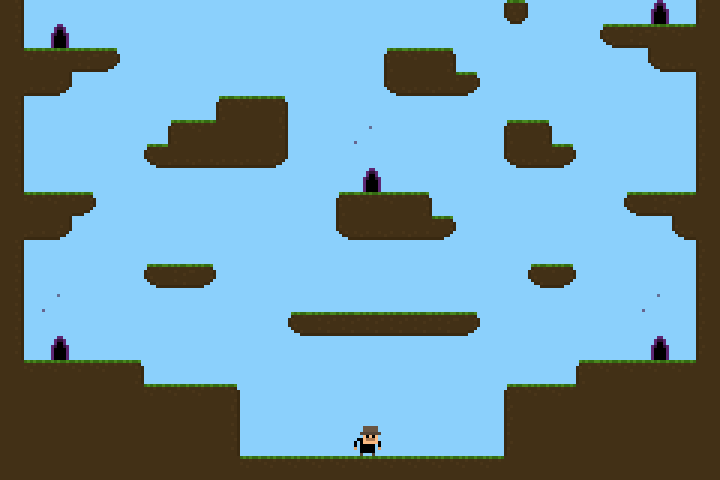
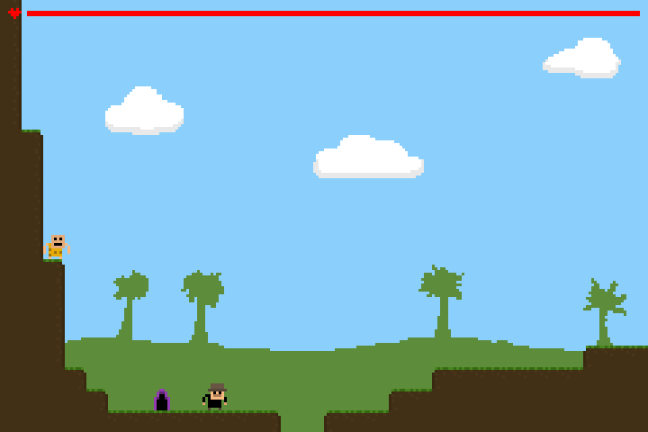
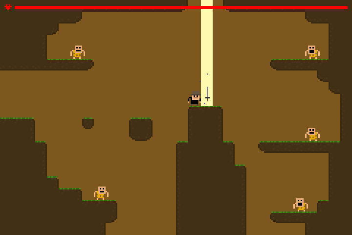
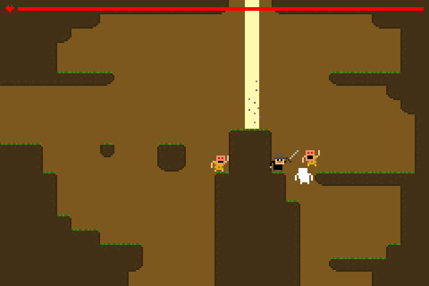
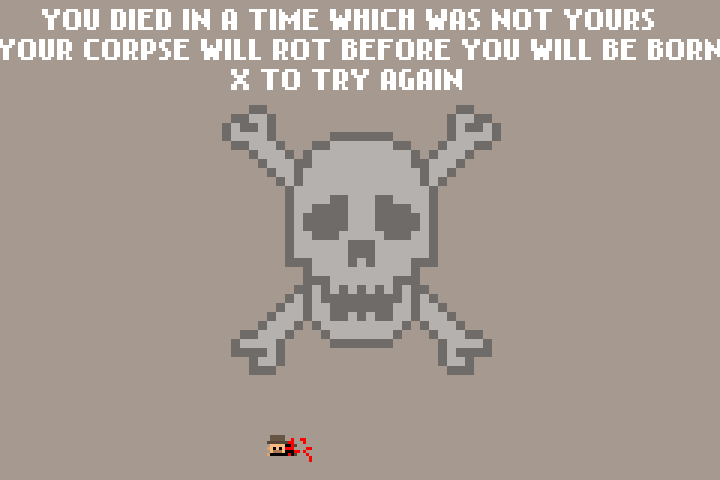

About
You fix mistakes in time for a living. On your last job, you left your claymore swords behind in the prehistoric era. Now the balance of time is broken, and only you can put it right.
Step through a portal into the Stone Age. Cross the open land, find the cave, and take the sword from its beam of light.
The cave people believe the sword is a gift from the gods. The moment you take it, every one of them turns on you. Fight your way out with the sword, and escape back through the portal you came in by. Make it home alive, and you win.
Die, and you will see a message from the past. The body tumbles in slow motion. Press any key to try again.
This is the post-compo version, finished a week after the jam. It adds a parallax background of trees and clouds, and tighter, faster player movement.
Aim of the game
Take the sword from the cave, then escape back through the portal without dying.
How to play
- Press X to page through the intro, or keep pressing it to skip.
- In the time HQ, walk into any of the five portals. They all lead to the same place for now.
- In the Stone Age, head right. Jump the gaps. Falling into one kills you.
- Find the cave and the sword glowing in its beam of light. Touch the sword to take it.
- The cave people now attack. Press C to swing the sword and knock them back.
- Run back left to the portal where you started, and step through it.
- Back in the HQ, wait a moment. The screen fades to white, and you win.
- Hold X longer to jump higher. A short tap gives a short hop.
- Cave people only hurt you from the front. Turn and face them when you swing.
- Each cave person takes four hits. You take ten. Watch the health bar at the top.
- When your health drops below half, the heart starts to flash.
Controls
On a touch screen, the buttons under the game stand in for these keys.
- ← →
- Move
- X
- Jump. Hold it for a higher jump.
- C
- Swing the sword, once you have it
- Any key
- Try again, on the death screen
Screenshots





History
I made this game for Ludum Dare 21, held from 19 to 22 August 2011. The theme was "Escape". I entered the Compo, the solo 48-hour version, as aukyr.
It is written in ActionScript 3 with the Flixel 2.55 game library, in a FlashDevelop project, compiled with the Flex SDK 4.5. The compo version was submitted on 22 August 2011. This post-compo version was built on 28 August 2011.
Levels are drawn as small PNG images, one pixel per tile. Black pixels are ground, and colored pixels mark the portal, the sword and the cave people.
The intro text inside the game says "LUDUM DARE 20". The event was actually Ludum Dare 21. The port keeps the original text.
How it was ported
Flash Player is gone from every browser. The compo source code survived, but the post-compo version only existed as a compiled SWF file.
In October 2026 the post-compo SWF was decompiled with JPEXS Free Flash Decompiler, to read its game logic and extract the art. The compo source served as a readable reference. The game was then rewritten by hand in plain C, with readable names and comments. It is not a translation of decompiled code.
The port uses raylib 6.0 for drawing and input. A small Flixel 2.5 style layer in C copies Flixel's movement maths and its collision code. It also copies the auto-tiling, the following camera, slow motion, screen shake and fades. The player and the cave people move, jump and collide as they did in 2011.
The web version is compiled to WebAssembly with Emscripten. The same code also builds for macOS, Windows and Linux.
The port was written with Claude Code, Anthropic's coding agent, running the Claude Opus 5.5 model.